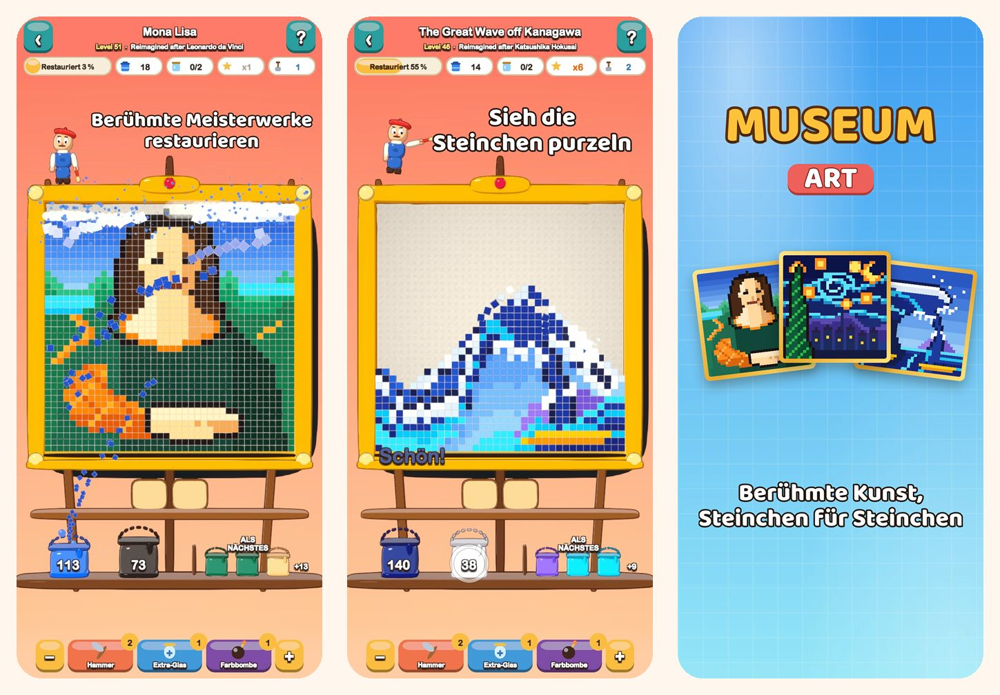

Museum Art
Farbrätsel in Pixel-Art
Tippe eine Farbe an und sieh die Steinchen purzeln. Restauriere 51 Pixel-Art-Bilder, von der Mona Lisa bis zu Istanbul, Paris, Rom und New York.
Im App Store laden
Über das Spiel
Jedes Bild in Museum Art besteht aus bunten, quadratischen Steinchen. Räume sie Farbe für Farbe ab und sieh zu, wie das Bild wieder strahlt.
SO WIRD GESPIELT
- Tippe auf eine Farbfläche, die die unterste Reihe berührt, oder auf einen Eimer im Regal: Die Steinchen fliegen in ihren Eimer.
- Die Steinchen darüber rutschen wie Sand nach und eröffnen neue Züge.
- Noch kein Eimer für eine Farbe? Parke sie in einem Glas auf dem Tablett.
- Nutze das Tablett seltener, um mehr Sterne zu verdienen.
51 BILDER ZUM RESTAURIEREN
- Leuchtende, leichte Motive zum Einstieg: ein Heißluftballon, ein Segelboot, eine Katze und ein Leuchtturm.
- Natur: verschneite Gipfel, ein Bergsee, Kirschblüten und eine Wüste in der Dämmerung.
- Eine Weltreise durch Istanbul, Paris, Rom und New York.
- Die Schatzkammer der Meister: Die große Welle, Die Sternennacht, Seerosen, Die Milchmagd, Impression, Sonnenaufgang und die Mona Lisa, jeweils neu als Pixel-Art gestaltet.
ENTSPANNT UND FAIR
- Jedes Level ist ohne Booster lösbar, und ein neuer Versuch kostet nichts.
- Booster für knifflige Momente: Hammer, Extra-Glas und Farbbombe.
- Zoome jederzeit an die Details heran.
- Zu jedem Bild gibt es eine spannende Info.
- In 19 Sprachen spielbar.